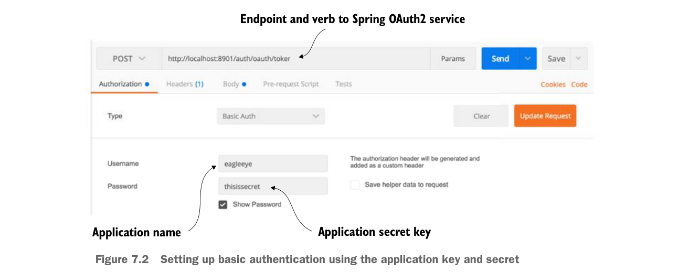

.authenticationManager(authenticationManager)
.userDetailsService(userDetailsService);
}Hai bean này được dùng để cấu hình các endpoint /auth/oauth/token và /auth/user mà chúng ta sẽ thấy hoạt động ngay sau đây.
7.2.4 Xác thực người dùng
Đến thời điểm này, bạn đã có đủ chức năng cơ bản của máy chủ OAuth2 để thực hiện xác thực ứng dụng và người dùng cho luồng password grant. Giờ bạn sẽ mô phỏng một người dùng lấy token OAuth2 bằng cách dùng POSTMAN để POST tới endpoint http://localhost:8901/auth/oauth/token và cung cấp tên ứng dụng, khóa bí mật, user ID và mật khẩu.
Trước tiên, bạn cần thiết lập POSTMAN với tên ứng dụng và khóa bí mật. Bạn sẽ truyền các phần tử này tới endpoint máy chủ OAuth2 bằng xác thực cơ bản (basic authentication). Hình 7.2 cho thấy cách thiết lập POSTMAN để thực hiện lệnh gọi xác thực cơ bản.

Thiết lập xác thực cơ bản bằng khóa ứng dụng và secret
Tuy nhiên, bạn chưa sẵn sàng để gọi lấy token. Sau khi đã cấu hình tên ứng dụng và khóa bí mật, bạn cần truyền các thông tin sau vào dịch vụ dưới dạng tham số form HTTP:
- grant_type—Loại grant OAuth2 bạn đang thực hiện. Trong ví dụ này, bạn sẽ dùng password grant.
- Scope—Phạm vi của ứng dụng. Vì bạn chỉ định nghĩa hai phạm vi hợp lệ khi đăng ký ứng dụng (webclient và mobileclient), giá trị truyền vào phải là một trong hai phạm vi này.
- Username—Tên người dùng đang đăng nhập.
- Password—Mật khẩu của người dùng đang đăng nhập.